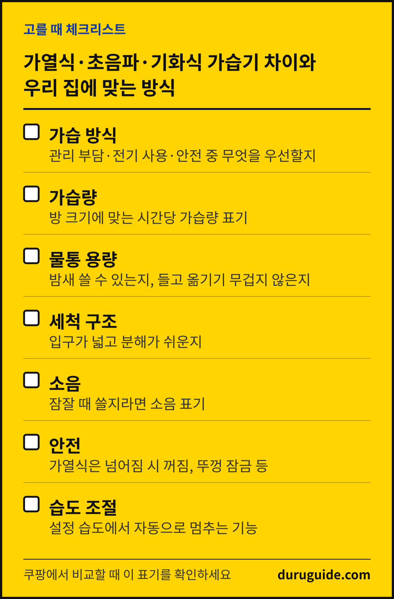

가열식·초음파·기화식 가습기 차이와 우리 집에 맞는 방식
이런 상황이죠
난방을 켜기 시작하니 아침마다 목이 칼칼하고 피부가 당겨요. 가습기를 사려고 보니 가열식, 초음파식, 기화식에 복합식까지 있어서 무엇이 우리 집에 맞는지 헷갈려요. 방식마다 장단점이 분명해서 쓰는 사람과 공간을 먼저 생각하면 고르기 쉬워요.
왜 생기나
겨울에는 바깥 공기가 건조하고, 실내 난방이 공기를 데우면서 습도가 더 낮아진 것처럼 느껴져요. 가습기는 물을 공기 중으로 보내는 방식이 서로 달라요.
- 가열식 — 물을 끓여 수증기로 내보내요. 끓이는 과정이 있어 물 관리 부담이 덜한 편이지만 전기를 많이 쓰고, 증기와 본체가 뜨거워요.
- 초음파식 — 진동으로 물을 아주 작은 물방울로 만들어 뿜어요. 조용하고 전기를 적게 쓰지만, 물속 성분도 함께 퍼질 수 있어 물 관리가 중요해요. 가구에 하얀 가루가 남기도 해요.
- 기화식 — 젖은 필터에 바람을 보내 물이 자연스럽게 증발하게 해요. 습도가 지나치게 올라가는 일이 적지만, 가습량이 적은 편이고 필터를 관리해야 해요.
- 복합식 — 두 방식을 섞은 형태예요. 어떤 방식을 섞었는지 표기를 보세요.
사기 전에 먼저 해볼 것
- 온습도계로 먼저 재 보세요. 실내 습도는 흔히 40~60% 정도를 권해요. 이미 그 범위라면 가습기가 꼭 필요하지 않을 수 있어요.
- 빨래를 실내에 널어요. 젖은 빨래나 젖은 수건만으로도 습도가 꽤 올라가요.
- 너무 덥지 않게 난방해요. 실내 온도를 조금 낮추면 건조함이 덜하게 느껴지기도 해요.
고를 때 체크리스트
| 확인 항목 | 보는 기준 |
|---|---|
| 가습 방식 | 관리 부담·전기 사용·안전 중 무엇을 우선할지 |
| 가습량 | 방 크기에 맞는 시간당 가습량 표기 |
| 물통 용량 | 밤새 쓸 수 있는지, 들고 옮기기 무겁지 않은지 |
| 세척 구조 | 입구가 넓고 분해가 쉬운지 |
| 소음 | 잠잘 때 쓸지라면 소음 표기 |
| 안전 | 가열식은 넘어짐 시 꺼짐, 뚜껑 잠금 등 |
| 습도 조절 | 설정 습도에서 자동으로 멈추는 기능 |
이런 분께는 맞지 않아요
- 어린아이가 있는 집이라면 뜨거운 증기가 나오는 가열식은 손이 닿지 않는 곳에 두거나 다른 방식을 고르는 게 좋아요.
- 매일 물을 갈 여유가 없다면 초음파식은 관리 부담이 커요.
상황별로 정리하면
- 잠자는 방 — 소음이 적은 초음파식이나 기화식을 많이 봐요. 대신 초음파식은 매일 물 갈기를 지켜야 해요.
- 물 관리에 자신이 없을 때 — 가열식이 부담이 덜한 편이지만 전기 사용과 화상 위험을 함께 생각하세요.
- 넓은 거실 — 시간당 가습량이 충분한지부터 보세요. 작은 제품 하나로는 체감이 약할 수 있어요.
가습기 물에 살균제나 세정제를 넣지 마세요. 과하게 가습하면 창가에 결로와 곰팡이가 생길 수 있으니 습도를 확인하며 쓰세요.
추천 제품 찾기
먼저 쓰는 공간의 크기와 아이 유무, 세척에 쓸 수 있는 시간을 정하세요. 쿠팡에서는 가습 방식, 시간당 가습량, 물통 용량, 분해 세척 구조, 안전 기능을 비교해 보시면 돼요. 현재 가격은 쿠팡에서 확인해 주세요.

이 포스팅은 쿠팡 파트너스 활동의 일환으로, 이에 따른 일정액의 수수료를 제공받습니다.
이 콘텐츠는 토스쇼핑 쉐어링크 활동의 일환으로, 링크를 통한 구매가 발생하면 일정 수수료를 지급받습니다.